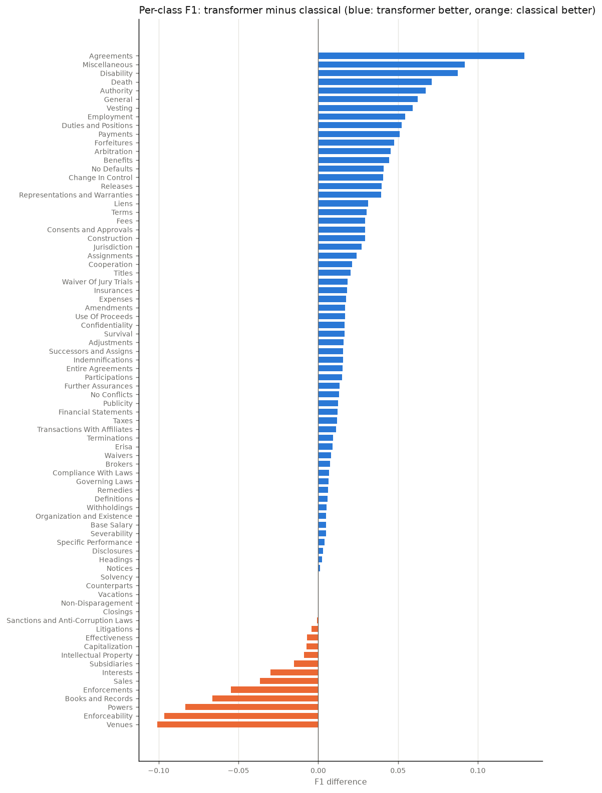

Transformer vs classical
Contract Clause Classifier: LEDGAR clause types, 78 classes, same data and splits for every model.
Two different approaches trained on exactly the same data: ledgar-qwen3-0.6b-v1 (fine-tuned transformer) and
ledgar-tfidf-lr-v2 (TF-IDF + logistic regression). Same 60,000 training provisions, 78 clause types, and the same
10,000-provision test split for every number below. Transformer details ·
Classical details.
Side by side
| Transformer | Classical | |
|---|---|---|
| Test accuracy | 92.46% better | 90.88% |
| Test top-3 accuracy | 97.69% better | 97.33% |
| Test macro-F1 | 89.67% better | 88.24% |
| Calibration error (lower is better) | 2.2% | 1.9% better |
| Log loss (lower is better) | 0.3644 better | 0.3837 |
| Clause types where it has higher F1 | 53 | 11 |
| Training time | 10.0 h on a laptop GPU | 23 min on CPU |
| Inference per provision (CPU) | 102 ms | 0.8 ms |
| Model size | 1.2 GB | 145 MB |
| Parameters / features | 596M parameters | 253,103 features × 78 classes |
| Explainability | no direct explanation | weighted phrases per clause type |
| Runtime needs | PyTorch + transformers; GPU optional | scikit-learn only; CPU |
Where they agree and disagree
On the full test split (10,000 provisions) the two models give the same top-1 clause type for 94.2% of provisions. When they agree they are right 94.9% of the time, so agreement is a strong confidence signal. On the 580 provisions where they disagree, the transformer is right 52.8%, the classical model 25.5%, and both are wrong 21.7%. At least one of the two is right for 93.9% of provisions.
Per clause type
The transformer has higher F1 on 53 clause types and the classical model on 11 (differences under 0.5 points not counted).

Transformer: top confusions
| True clause type | Predicted as | Count |
|---|---|---|
| Taxes | Withholdings | 21 |
| Representations and Warranties | Survival | 13 |
| Assignments | Successors and Assigns | 13 |
| General | Payments | 12 |
| Amendments | Entire Agreements | 10 |
| Benefits | Successors and Assigns | 9 |
| Enforceability | Severability | 9 |
| Miscellaneous | Entire Agreements | 9 |
| Venues | Governing Laws | 8 |
| Successors and Assigns | Assignments | 8 |
Classical: top confusions
| True clause type | Predicted as | Count |
|---|---|---|
| Taxes | Withholdings | 19 |
| Successors and Assigns | Assignments | 13 |
| General | Payments | 13 |
| Miscellaneous | Entire Agreements | 12 |
| Assignments | Successors and Assigns | 12 |
| Representations and Warranties | Survival | 12 |
| Fees | Expenses | 9 |
| Benefits | Successors and Assigns | 9 |
| Employment | Duties and Positions | 8 |
| Amendments | Entire Agreements | 8 |
Which to use
Transformer for the highest accuracy and for unusual or paraphrased wording, since it reads
meaning rather than matching words. Classical when speed, cost or explanations matter: it is about
128× faster per provision on a CPU, a fraction of the size, trains in minutes, and every prediction
can be traced to phrases. Both together (the playground's compare mode, POST /v1/compare): when they
agree, the answer is very likely right; when they disagree, the provision deserves a human look.